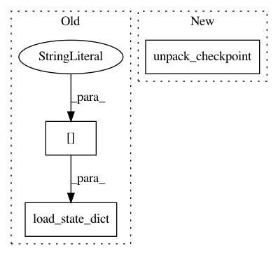

76b4d1ede08ef3c9b59106269e088fbce3a3689a,dl/callbacks.py,CheckpointCallback,load_checkpoint,#,277
Before Change
if isinstance(model, torch.nn.DataParallel):
model = model.module
if isinstance(model, Fp16Wrap):
model.network.load_state_dict(
checkpoint["model_state_dict"])
else:
model.load_state_dict(
checkpoint["model_state_dict"])
After Change
state.epoch = checkpoint["epoch"]
state.best_metrics = checkpoint["best_metrics"]
UtilsFactory.unpack_checkpoint(
checkpoint,
model=state.model, criterion=state._criterion,
optimizer=state._optimizer, scheduler=state._scheduler)
print("loaded checkpoint \"{}\" (epoch {})"
.format(filename, checkpoint["epoch"]))
else:
In pattern: SUPERPATTERN
Frequency: 3
Non-data size: 3
Instances
Project Name: Scitator/catalyst
Commit Name: 76b4d1ede08ef3c9b59106269e088fbce3a3689a
Time: 2018-09-17
Author: scitator@gmail.com
File Name: dl/callbacks.py
Class Name: CheckpointCallback
Method Name: load_checkpoint
Project Name: catalyst-team/catalyst
Commit Name: 10e28a98e185571218b1dcb9f9b91f663a8ec673
Time: 2019-06-07
Author: scitator@gmail.com
File Name: catalyst/dl/scripts/trace.py
Class Name:
Method Name: trace_model_from_checkpoint